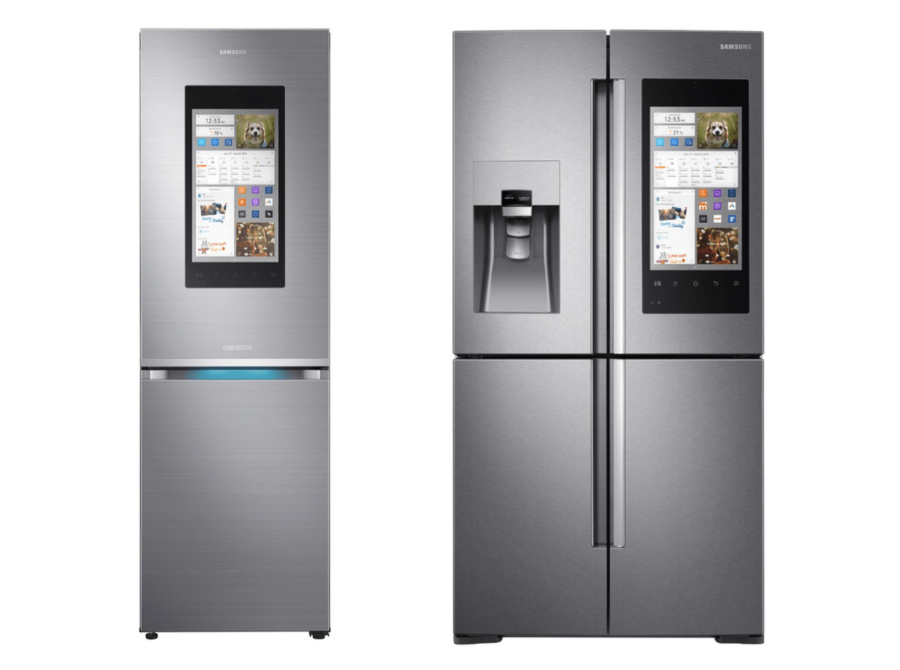

Depuis l'arrivée des smartphones, des tablettes ou encore des objets connectés, le web est accessible partout et n'importe quand.
Que l'on soit chez soit ou à l'extérieur nous restons toujours connectés au web et monde numérique. Grâce à ces nouveaux outils technologiques le
web est accessible à l'aide plusieurs méthodes comme la reconnaissance vocale, la reconnaissance des geste ou encore la méthode la plus répandue à savoir
le tactiles des écrans. Si l'on prend le cas des google glass, celle ci fonctionne à l'aide d'une connexion avec le smartphone, d'une caméra, d'un
micro et d'un écouteur. Lorsque vous vous baladez par exemple et que vous vouliez une information sur la tour Eiffeil qui se situe devant
vous, vous pouvez à l'aide de la reconnaissance vocale obtenir des informations visuels qui viennent directement du web ou encore d'applications.
Des images interactives commencent à apparaitre sur certains sites également. En effet google a montré qu'il était possible d'utiliser la réalité augmentée
en guise d'illustration. Par exemple sur un site web de présentation d'œuvre d'arts, il serait possible depuis le site web de pouvoir déclencher la caméra
du smartphone pour que celle-ci à l'aide de la réalité augmentée puisse placé en grandeur réelle l'œuvre d'arts dans la maison avec quelques infos complémentaires.
Le web 4.0 et les objets connectés
En dehors de la réalité augmentée, il existe d'autres types d'objets connectées comme des montres, des réfrigérateurs ect... En effet, l'utilisateur peut
grâce à un réfrigérateur connectée et un paramétrage préalable ne plus avoir le besoin de faire ses courses. Le réfrigérateur analyse son propre contenu
et commande à nouveau les aliments manquants sur le site web favorise de l'utilisateur.

Ces objets connectés permettent ainsi dans le milieu professionnel notamment d'avoir l'opportunité de travailler en permanence en ligne. Grâce au cloud
computing les travaux de groupes sont facilités. Tout les membres d'un projet on accès en permanence aux travaux des collègues, aux informations déjà obtenues
ou encore pour stocker des données necessaire à l'ensemble du groupe du projet. On voit également la possibilité de travailler en simultané et en directement
grâce à certains outils tel que Google drive ou la création, la modification et le stockage des documents se fait sur le cloud.
Il y a également beaucoup d'objets connectés qui necessite plus qu'une application et une liaison réseau. En ce qui concerne la domotique ou encore
les domaines ou l'on doit faire des mesures, l'utilisation de capteurs, de caméra ou encore des microphones. Cela permet ainsi de pouvoir récupérer des
informations "réelles" et de pouvoir les traiter via une application ou encore un site web à distance. C'est très utile dans l'industrie 4.0 dans différents
domaines, on peut prendre l'exemple des capteurs thermiques dans les maisons permettant à l'application de connaître la température de la demeure pour
la réguler par la suite.